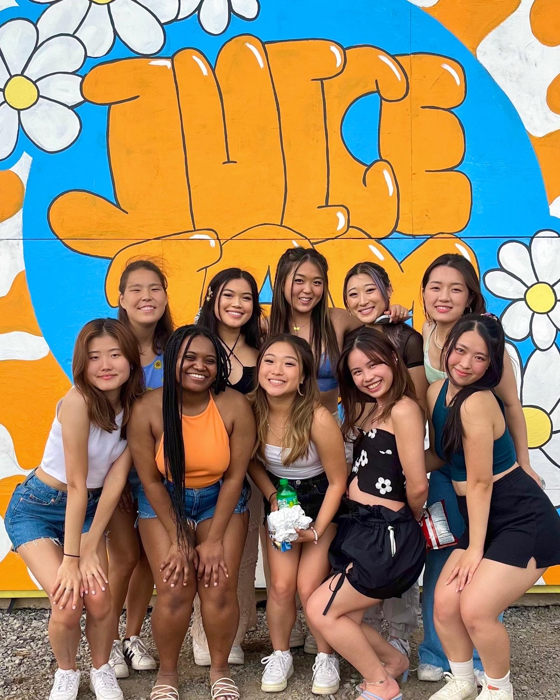
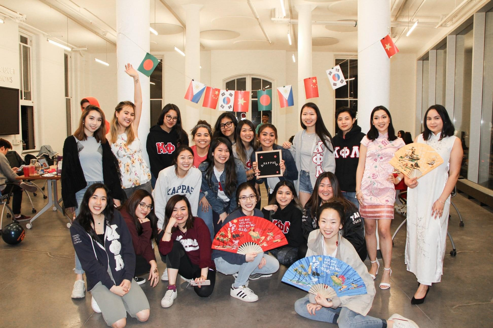

Sisterhood

Although it is hard to put into words, each sister has a passionate flame that burns as a symbol of their sisterhood. We value the special bond that has been built between us over friendship, respect, and a common goal. Anywhere we travel and regardless of when we were initiated, every sister is connected to and significant to the sorority. We may take solace in the knowledge that Kappa is so much bigger than our own campuses, with a network of sisters across the globe! No sisterhood compares to the Kappa sisterhood.
Service

As much as we enjoy ourselves, we also emphasize the value of giving back to our neighborhood. Sisters take part in a range of activities every semester to support charitable causes, raise awareness about pressing issues, and improve Syracuse. CARE, a prominent humanitarian organization battling worldwide poverty, is our nation's charity. Vera House, a local charity that aids women and children experiencing domestic and sexual violence, is our community charity. We work to advance respect and equality, much like Vera House.
Cultural Diversity

Although we have Asian interests, we are not exclusively Asian. We support raising people's awareness of all cultures. Throughout the academic year, we participate in a variety of cultural activities hosted by various organizations. We have Asian Awareness Week during our foundation week in November, where a variety of events emphasize many facets of Asian cultures. We hold Spirit of the Phoenix Week activities every March alongside our sisters around the country to celebrate diversity, generosity, and women's empowerment. We also take part in Syracuse University's annual Asian American & Pacific Islander Heritage Month, which takes place in April.
 We, the sisters of Kappa Phi Lambda Sorority, Incorporated, strive to strengthen sisterhood amongst women by providing service and promoting cultural diversity to our members and our community, thus securing the bond of kinship for posterity. Kappa Phi Lambda exists to further educate individuals about Pan-Asian culture, while keeping our own identities. We aim for academic excellence, keeping in mind the importance of education and learning as the key to strength, awareness, and fulfillment.
We, the sisters of Kappa Phi Lambda Sorority, Incorporated, strive to strengthen sisterhood amongst women by providing service and promoting cultural diversity to our members and our community, thus securing the bond of kinship for posterity. Kappa Phi Lambda exists to further educate individuals about Pan-Asian culture, while keeping our own identities. We aim for academic excellence, keeping in mind the importance of education and learning as the key to strength, awareness, and fulfillment.